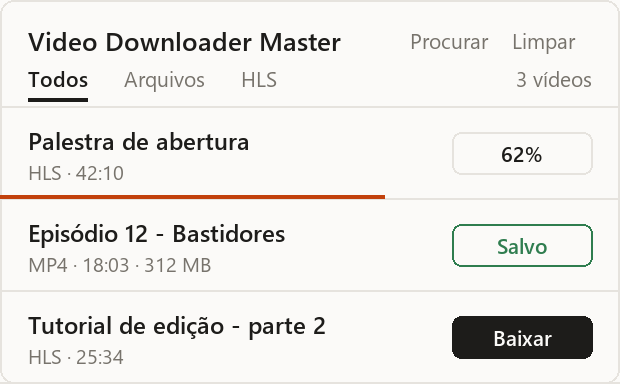

Salve o vídeo da página com o nome certo.
Dê play, abra a extensão e clique em Baixar. O arquivo já sai com o título do vídeo, não com "video (37).mp4".
3 downloads grátis a cada 24 horas, sem cadastro.

Como funciona
Sem copiar link, sem site de conversão.
Dê play no vídeo
A extensão percebe os vídeos que a página carrega, inclusive os que tocam dentro de outro player.
Abra a extensão
Aparece a lista com o título de cada vídeo, a duração e a qualidade.
Clique em Baixar
O arquivo vai para a sua pasta de downloads com o nome do vídeo.
O que ela faz
Feita para quem guarda vídeo para assistir depois, estudar ou editar.
Título no nome do arquivo
Usa o título que aparece acima do player ou o nome do post, sem caracteres que o Windows recusa.
Vídeos em partes
Junta os pedaços dos players de streaming (HLS) num arquivo só, com áudio e vídeo juntos.
Melhor qualidade disponível
Quando o site oferece várias, baixa a maior.
Rápida
Baixa vários pedaços ao mesmo tempo e tenta de novo quando a conexão oscila.
Funciona em vários sites
Páginas comuns, players embutidos, cursos e redes sociais.
Nada sai do seu computador
O download acontece no seu navegador. Não guardamos seus vídeos nem o que você assiste.
Preços
Comece grátis. Assine quando precisar de mais.
Assinatura
- Downloads ilimitados
- Cartão (renova sozinho) ou Pix (30 dias por vez)
- Use em até 3 navegadores
- Cancele quando quiser
A assinatura é feita pela extensão: instale, abra e clique em "Assinar por R$ 14,90/mês". Assim ela fica ligada ao seu navegador.
Perguntas
Se a sua não estiver aqui, escreva para o suporte.
Funciona em qualquer site?
Na maioria dos sites que tocam vídeo pelo navegador. Não funciona no YouTube, por regra da Chrome Web Store, nem em serviços com proteção contra cópia (DRM), como plataformas de filmes e séries por assinatura. Nesses casos o vídeo aparece como "Protegido" e o download não é descontado.
O vídeo não apareceu na lista. E agora?
Dê play por alguns segundos e abra a extensão de novo. Se ainda assim não aparecer, clique em "Procurar". Alguns sites só carregam o vídeo depois do play.
Posso baixar qualquer vídeo?
Baixe apenas o que você tem direito de guardar: conteúdo seu, com licença livre ou que o autor permite salvar. Você é responsável pelo uso que faz dos arquivos.
Como funciona o Pix?
Cada pagamento libera 30 dias. Perto do vencimento a extensão mostra o botão "Renovar". No cartão a renovação é automática todo mês.
Como cancelo?
No cartão, cancele a assinatura na sua conta do Mercado Pago (Assinaturas). Você continua com acesso até o fim do mês já pago. No Pix não há o que cancelar: basta não renovar.
Troquei de computador. Perco a assinatura?
Não. Depois do pagamento você recebe um código (VDM-XXXX-XXXX-XXXX). Na extensão do outro navegador, clique em "Já assinei" e cole o código. Vale para até 3 navegadores.
Vocês veem o que eu baixo?
Não. A extensão não envia para nós os endereços dos vídeos nem o seu histórico. O único contato com o nosso servidor é para conferir a assinatura. Veja a política de privacidade.